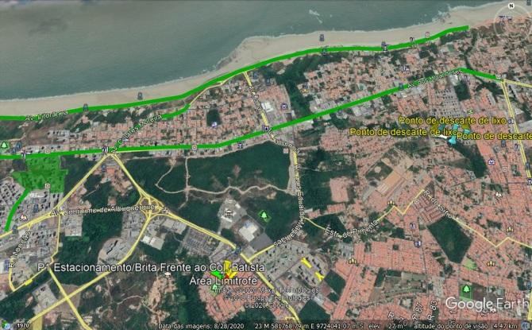
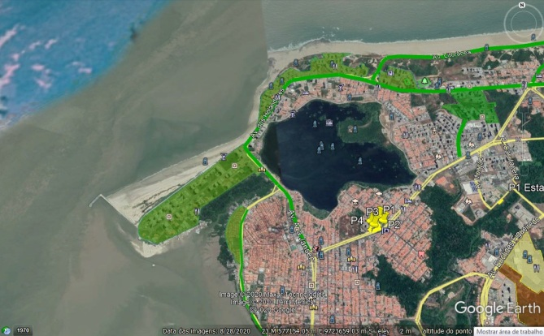
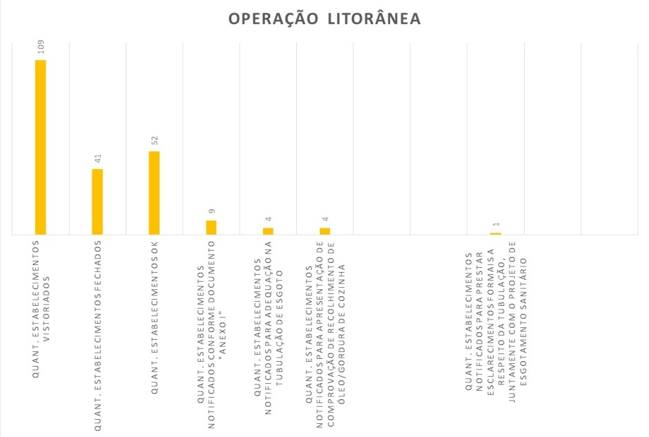
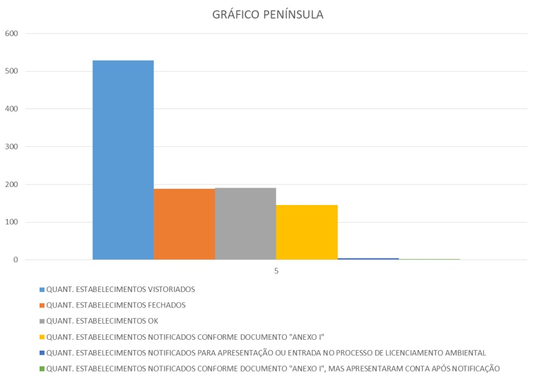

Diagnóstico do abastecimento de água e tratamento de esgoto em empreendimentos e residências tangentes à orla de São Luís/MA
Diagnosis of Water Supply and Sewage Treatment in Developments and Residences Adjacent to the São Luís/MA
Ana Carolina Vale Porto PEREIRA1; Mirian de Fátima Sousa ROCHA2
1 UFMA/Bacharel em Ciência e Tecnologia – engcarolinavaleporto@gmail.com
2 UFMA/Doutora em Educação, Licenciada em Letras – mirian.rocha@ufma.br
RESUMO
Este trabalho visa apresentar e investigar o Problema: Fornecimento irregular de água e tratamento efetivo dos esgotos em empreendimentos e residências tangentes à orla de São Luís/MA. O mesmo ocorreu através de pesquisas quanti-qualitativas, bibliográficas, documentais e com presença física do pesquisador em reuniões do Conselho da Cidade- CONCID na elaboração do novo Plano Diretor da cidade. A capital do estado do Maranhão conta com um abastecimento de água desordenado, acarretando em não periodicidade, eficácia, boa qualidade e boa gestão dos recursos hídricos. A Companhia de Saneamento Ambiental do Maranhão- CAEMA, empresa de economia mista, é responsável pelo esgotamento sanitário e promoção dos serviços públicos de abastecimento de água onde o mesmo se divide por seis mananciais superficiais, artificiais e subterrâneos.
Palavras-chave: Gestão de recursos hídricos; CAEMA; abastecimento.
ABSTRACT
This work aims to present and investigate the Problem: Irregular water supply and effective sewage treatment in developments and residences adjacent to the shoreline of São Luís/MA. This was carried out through quantitative-qualitative research, bibliographic and documentary analysis, and the physical presence of the researcher in meetings of the City Council (CONCID) during the drafting of the new Master Plan for the city. The capital of the state of Maranhão faces a disorganized water supply system, resulting in a lack of regularity, efficiency, good quality, and proper management of water resources. The Maranhão Environmental Sanitation Company (CAEMA), a mixed-economy company, is responsible for sewage treatment and the provision of public water supply services, which are sourced from six surface, artificial, and underground water sources.
Keywords: Water resource management; CAEMA; water supply.
Introdução
Pensando em sustentabilidade ecológica, atrela-se a ideia de um uso racional dos recursos naturais. O Brasil possui diversos recursos naturais, desde recursos biológicos, hídricos, energéticos e minerais. Este país dispõe de uma das maiores reservas de água doce do mundo, considerado uma potência mundial quando o assunto é disponibilidade hídrica; contendo cerca de 12% de todas as reservas de água existentes no planeta (O GLOBO, 2010).
No entanto, a distribuição da água no Brasil não é homogênea. A maior parte desse recurso se encontra na região Norte, que concentra 68% das reservas hídricas, já o Nordeste concentra 3%, sendo uma das regiões mais populosas do país. Por isso é necessário planejamento, gestão e infraestrutura para garantir a adequada distribuição desse recurso para todos os habitantes. No entanto, percebe-se que as estruturas políticas e administrativas que permeiam as diversas esferas governamentais representam os principais obstáculos no sentido da garantia do acesso adequado e estes recursos (PENA, 2020).
No Brasil, o saneamento básico é um direito previsto pela Lei n° 11.445/2007, e é definido como “O conjunto de serviços, infraestrutura e instalações que abrangem quatro componentes: abastecimento de água, esgotamento sanitário, limpeza urbana e manejo de resíduos sólidos e drenagem e manejo de águas pluviais urbanas” (BRASIL, 2007). E a administração dos recursos hídricos é função da União, cabendo aos Estados e Municípios apenas, de acordo com o art. 23, XI, da Constituição Federal, “registrar, acompanhar e fiscalizar as concessões de direitos de pesquisa e exploração de recursos hídricos e minerais em seus territórios” (BARROSO, 2002). Portanto, oferecer, bem como, criar meios e opções de abastecimento de água e tratamento de esgoto regular para a determinada população é obrigação e dever dos poderes públicos locais.
O município de São Luís/MA, mesmo possuidor de vários rios e longas bacias hidrográficas em sua extensão territorial, que em tese teriam condições de atender regularmente a população, o mesmo vem sofrendo problemas constantes de falta d’água e tratamento efetivo de esgoto. A empresa estatal responsável pela gestão e distribuição da água é alvo de várias críticas e reclamações por parte da população e de órgãos públicos fiscalizadores, sinalizando fragilidades e falhas no gerenciamento público dos recursos hídricos em questão.
Neste sentido, o propósito de investigar sobre o abastecimento de água e tratamento efetivo dos esgotos em empreendimentos e residências tangentes à orla em São Luís/MA, visa fazer deste trabalho um veículo de informações para quaisquer interessados na realidade atual do município de São Luís do Estado do Maranhão, bem como servir de embasamento para outros futuros projetos e ações a fim de sanar problemáticas relacionadas a este tema.
A Região Metropolitana de São Luís e sua Zona Rural no Contexto do Macrozoneamento do Plano Diretor
A ilha de São Luís possui um território com extensão de 2076,4 km². Geograficamente, limita-se com o Oceano Atlântico, ao Norte; com o Estreito dos Mosquitos, ao Sul; com a Baia de São Marcos, a oeste e a Baía de São José a leste. Está inserida no contexto da Região Geomorfológica definida como Planícies Litorâneas, em particular, na unidade geomorfológica conhecida como Golfão Maranhense. Geologicamente, toda a área encontra-se dentro da feição geotectônica denominada Craton de São Luís, coberto quase a totalidade de sedimentos Mesozoico e Cenozoico (FARIAS FILHO, 2015).
A rede hidrográfica de São Luís possui quase todos os rios perenes e copiosos e cerca de 12 bacias hidrográficas, sendo elas Estiva, Anil, Itaqui, Tibiri, Praias, Bacanga, Paciência, Inhaúma, Cachorros, Santo Antônio, Geniparana e Guarapiranga. A Ilha Maranhense é dividida em quatro municípios: São Luís, São José de Ribamar, Paço do lumiar e Raposa, englobando uma área de 1 483,232 km² (FARIAS FILHO, 2015).
O município de São Luís possui dois tipos de zona: rural e urbana. A zona rural está localizada de forma mesclada na Ilha de São Luís, porém sua concentração é maior na parte Sudeste e ocupa uma área de 20.820 hectares, contemplada com muita área verde e mananciais, na mesma, é existente a atividade de agricultura e criação de animais principalmente avinos e suínos. No entanto, existe um contraponto, concomitante a zona rural existe a zona industrial, destinada através do Decreto Estadual n°. 6.595, de 31 de agosto de 1977, e na Lei 3.253, de 29 de dezembro de 1992, de zoneamento, parcelamento, uso e ocupação do solo urbano e dá outras providências. Essa grande distinção de características e modo de desenvolvimento faz com que haja muitas desavenças de interesses e objetivos (PREFEITURA DE SÃO LUÍS, 1922).
A zona apontada no Plano Diretor como urbana é concentrada na região Norte e central de São Luís/MA. Possuindo todas as características de uma zona urbana consolidada, a mesma se encontra com maior infraestrutura e anexos de construções, bem como um melhor acesso aos transportes públicos. Sendo as atividades voltadas mais para o comércio e opções de lazer, como bares, restaurantes, praças, shoppings Center entre outros.
Em meio a esse dilema, torna-se importante destacar que o Plano Diretor da cidade, que tinha sua última versão datada do ano de 2006 e tem como objetivo dirigir o desenvolvimento do Município nos seus aspectos econômico, físico e social, encontra-se atrasado desde 2016, ano em que deveria ser revisado de acordo com o estatuto da cidade que prevê validade de até 10 anos de vigência para o Plano Diretor da cidade. Porém, por motivo de atraso e de má gestão das audiências públicas referentes a elaboração do que seria o novo Plano Diretor, foi firmado um TAC- Termo de Ajustamento de Conduta que fez a prefeitura conduzir trabalhos com o Conselho da Cidade- CONCID, órgão colegiado de composição paritária entre o Poder Público e a Sociedade Civil organizada, através de reuniões extraordinárias, totalizando 41 reuniões, das quais foi gerado o projeto de revisão do plano diretor para os próximos 10 anos.
Aspectos legais e a perfuração de poços
De acordo a Lei n°. 9.433 de 1977, Art. 1º, inciso primeiro - a água é um bem de domínio público, ela também determina que todos os usos que alterarem a qualidade, a quantidade e o regime existente nos corpos d’água, superficiais ou subterrâneos, estão sujeitos à Outorga (ANA, 2011).
A Outorga é um instrumento derivado da Política Nacional de Recursos Hídricos que tem o objetivo de assegurar tal controle dos usos da água e garante ao usuário outorgado o direito de acesso à água, uma vez que regulariza o seu uso em uma bacia hidrográfica, através da emissão da mesma por meio de entidades ou órgãos competentes para esse fim (ANA, 2011).
Em 2000 a criação da Lei n° 9.984, de 17 de julho, a ANA – Agência Nacional das Águas foi fundada como a entidade responsável pela implementação da Política Nacional de Recursos Hídricos. A outorga de direito de uso de recursos hídricos deve ser solicitada por todos aqueles que usam, ou pretendem usar, os recursos hídricos, seja para captação de águas superficiais, seja para as subterrâneas (ANA, 2011).
Vale ressaltar que para determinados usos a Outorga não é exigida. Os poços rasos, cacimbas e cisternas não precisam de autorização dos órgãos gestores ou de um licenciamento. No entanto, é de suma importância o cadastramento desses poços para haver um controle eficaz da gestão dos recursos hídricos locais (ANA, 2011).
De modo simultâneo, existe também a ABAS- Associação Brasileira de Águas Subterrâneas, uma entidade Técnica – Científica sem fins lucrativos que tem como objetivos, dentro do escopo das águas subterrâneas: utilização racional e sustentada; divulgação; elevação do nível técnico dos associados; elevação da qualidade dos serviços prestados pelas empresas associadas; fomentar a utilização de aquíferos de forma racional, através de gestão integrada, observação das normas técnicas e licenças ambientais; desenvolvimento de técnicas e tecnologias.
A mesma afirma que nos casos dos chamados “poços tubulares profundos”, também conhecidos por artesianos ou semiartesiano, como são obras de engenharia geológica, requerem antes de suas construções um licenciamento e ressalta que para poços rasos, apesar de não ser exigido um licenciamento, é primordial haver um credenciamento acompanhado de estudo prévio técnico local.
CAEMA
A CAEMA- Companhia de Saneamento Ambiental do Maranhão é uma empresa de economia mista criada por meio da Lei Estadual n°. 2.653 no dia 06 de junho de 1966 com o objetivo de coordenar o planejamento e executar, operar, explorar serviços públicos de esgotos e abastecimento de água potável, bem como, realizar obras de saneamento básico no Estado no Maranhão (CAEMA, 2011).
Atualmente, em dezembro do ano de 2020, a CAEMA conta com cerca de 1070 funcionários em São Luís para cuidar dos serviços da cidade de São Luís, e seus sistemas de abastecimentos de água são dividido em:
• O Sistema Italuís capta água do Rio Itapecuru.
• O Sistema Sacavém é abastecido pela Barragem do Batatã, Rio do Prata e Mãe Isabel.
• O Sistema Paciência é abastecido por duas baterias de poços designados Paciência I e II.
• 312 (trezentos e doze) poços tubulares profundos.
Contabilizaram-se os poços tubulares como um sistema de abastecimento porque é através destes que maior parte da zona rural de São Luís é abastecida, e com graves déficits de abrangência, a população conta com seus poços rasos individuais.
Quanto ao tratamento de esgoto é composto por 73 estações elevatórias e 3 (três) Estações de Tratamento de Esgotos – ETE nos bairros do Jaracati, Vinhais, Bacanga e uma em construção no bairro Anil.
Irregularidades na distribuição de água em São Luís
Constantemente, o município de São Luís/MA vem sofrendo com a ausência de uma eficaz distribuição de água por todo seu território. Isso vem se prologando durante anos, mesmo após a fundação da CAEMA, no ano de 1966. Pode-se atribuir diversas causas a essa problemática, das mais básicas as mais complexas.
Dentre os fatores mais relevantes, vale citar o processo de urbanização e consequente crescimento desordenado da cidade, devido a falta de planejamento contínuo e gestão, que se torna cada vez mais perceptível, visto que a população cresce a cada dia e o município não consegue acompanhar tal desenvolvimento de forma equilibrada com as necessidades da população. Os resultados são a ineficiência em setores básicos de São Luís, como saúde, transporte, educação e meio ambiente e abastecimento de água e esgoto (CAOSPLANEJADO 2019).
Com o Plano Diretor atrasado há 4 anos e o Plano Municipal de Saneamento Básico inexistente e sem previsão de elaboração, o município também não é provido de drenagem básica, sendo possível perceber um trabalho mínimo da mesma em alguns trechos da cidade, no entanto, inócuo (CAOSPLANEJADO, 2019).
Em suma, é utópico dizer que existe um abastecimento de água e de esgoto na capital do Maranhão de cunho integral e efetivo havendo carência de planos essenciais, gestão e promoção de ações hábeis.
A consequência desta somatória é o racionamento de água em alguns bairros, a falta de água constante nas torneiras de outros, áreas não abastecidas, equipamentos obsoletos e sem a devida manutenção periódica, logo, a danificação dos mesmos, e a contínua destinação dos investimentos para sanar falhas e vícios no sistema. Tornando mais difícil os investimentos em novas áreas e demandas. É possível ratificar essas informações no dia a dia, quando os constantes problemas são noticiados nos veículos de informações como Jornais, sites e programas de televisão; exemplos são os sites do G1, Imirante, entre ouros, disponíveis nas referências bibliográficas deste trabalho (IMIRANTE, 2020).
Irregularidades na distribuição de esgoto em São Luís
Quanto ao esgotamento sanitário da cidade de São Luís, os problemas são ainda piores por estarem atrelados direta e indiretamente à saúde e bem-estar da população ludovicense e, do turismo na capital. Logo, impacta de modo preciso na economia do estado e do município.
Por São Luís ser uma Ilha e possuir inúmeras praias, tal recurso é fonte de comércio e trabalho de parte de empresários e assalariados, tais como os ambulantes, bem como a principal referência de lazer para moradores locais e turistas, que buscam desfrutar da orla marítima ludovicense.
Parte do grupo dependente do fluxo de turistas é cada vez mais afetado pela baixa procura da classe consumidora e dos moradores da Ilha de São Luís/MA em decorrência das praias estarem impróprias para banho, gerando assim prejuízo e pouca arrecadação de capital.
Na saúde, por conta da ausência de um saneamento básico e ambiental os casos de verminose e dengue continuam fazendo o município de São Luís e o Estado do Maranhão liderar os rankings das piores redes de tratamento de esgoto do país, conforme relatório do IBGE no ano de 2012 durante o Rio+20 na capital do Estado (G1MARANHAO, 2012)
Concomitantemente, no meio ambiente a situação é grave, a capital vem frequentemente tendo casos de língua negra na praia da Litorânea, e a poluição dos rios que compõem as 11 bacias hidrográficas. Estima-se que todos os rios já se encontram poluídos, mudando apenas os níveis de poluição (G1MARANHAO, 2019).
Segundo a explanação dos pesquisadores Yata Anderson Gonzaga Masullo e Benedito Alex Marques de Oliveira Santos, em 2010, no VIII Simpósio Nacional de Geomorfologia a construção da Avenida Litorânea contribuiu para o aumento da urbanização. E esse rápido crescimento populacional e comercial em áreas próximas aos rios, e sem a devida fiscalização, teria intensificado a poluição das águas costeiras e o comprometimento da balneabilidade de rios e praias (G1MARANHAO, 2020).
Materiais e Métodos
A falta de tratamento adequado dos esgotos despejados nos rios, bem como, a falta de fiscalização do poder público para com a própria prestadora dos serviços (CAEMA) e empreendimentos que poluem os rios e praias é uma das principais causas e continuidade da poluição ambiental desses recursos.
Em face ao exposto, o Ministério Público Federal entrou com Ação Civil Pública n° 002880-71.2019.4.01.01.3700, ajuizada pelo mesmo, contra a Prefeitura de São Luís e o Governo do Estado para que identifiquem e exijam correções em empreendimentos e residências que despejam esgoto na Orla de São Luís.
Por conseguinte, a Secretaria Municipal de Meio Ambiente - SEMMAM elaborou um cronograma de vistoria com base em uma tabela oferecida pela CAEMA onde são descritos 1743 imóveis distribuídos entre os bairros Calhau, Ponta do Farol, Península, Ponta da Areia e Avenida Ferreira Goulart.
Posto isso, a fundamentação deste trabalho está baseada no acompanhamento em campo, junto à equipe de fiscalização da SEMMAM, na coleta desses dados do esgotamento sanitário de empreendimentos e residenciais da Orla e próximo a ela no município de São Luís/MA e, pelo Relatório realizado pela SEMMAM nas fiscalizações in loco.
Essas fiscalizações ocorreram conforme se vê nas linhas verdes destacadas nas imagens retiradas da ferramenta Google Earth que se segue:
Imagem 01: Destaque verde Avenida Litorânea e Avenida dos Holandeses.

Fonte: Google Earth (2020) - SAD 69.
Imagem 02: Destaque verde na região da Ponta do Farol, Península, Ilhinha.

Fonte: Google Earth (2020) – SAD 69.
Nas diligências, foram requisitadas as comprovações de como o estabelecimento/ residência ou Condomínio realizavam a coleta de esgoto no local. No ato da vistoria, as pessoas que não apresentassem imediatamente a fatura de água e esgoto (com o destaque para o pagamento da “taxa de esgoto”) foram notificadas para apresentarem por forma documental a comprovação de coleta e tratamento do esgoto do local, em prazos variáveis conforme “Anexo I”, localizado na última página deste artigo, elaborado para dar ciência do teor da notificação.
Na Avenida Litorânea, objeto da primeira etapa das fiscalizações, vistoriaram-se 109 empreendimentos, incluindo os Bares de margem e Hotéis; o período de levantamento ocorreu no mês de fevereiro de 2020.
O prosseguimento da segunda etapa, e mais extensa, se deu logo após o primeiro pico da Pandemia COVID-19, com a retomada do trabalho periódico da fiscalização na Ponta da Areia até a Ponta do Farol, incluindo alguns estabelecimentos da Avenida dos Holandeses até a rotatória do Quartel da polícia no mês de Julho/2020, juntamente com Avenida Colares Moreira, Avenida do Vale e ruas perpendiculares à mesma.
A terceira etapa se sucedeu no mês de Agosto/2020, na Avenida Vale do Rio Pimenta e algumas ruas perpendiculares/paralelas a mesma.
A quarta e última etapa foi desempenhada no mês de setembro/2020, na Avenida Ferreira Goulart no bairro da Ilhinha, onde a mesma se deu por coleta de amostragem.
No total ocorreram 638 vistorias exitosas; 109 na primeira etapa e 529 na segunda, terceira e quarta etapa, com a colheita de informações datadas e específicas.
Tabela 1 – Cronograma dos levantamentos de dados.
| Meses | 1ª Etapa | 2ª Etapa | Total |
|---|---|---|---|
| Fevereiro | X | ||
| Julho | X | ||
| Agosto | X | ||
| Setembro | X | ||
| 638 |
Fonte: Elaborado pela Autora (2020).
Ressalta-se que o período de pausa referente aos meses de março, abril, maio e junho, formalizados pelo Decreto Estadual n°. 35.660, de 16 de março de 2020 e Decreto Municipal n°. 54.890, de 17 de março de 2020, ocorreram por motivo de calamidade pública com a chegada e circulação da COVID-19. O retorno aos levantamentos se deram após o Decreto Estadual n°35.831, de 20 de maio de 2020.
Resultados e Discussões
Ocorreram 638 vistorias exitosas; 109 na primeira etapa e 529 na segunda, terceira e quarta etapa, com a colheita de informações datadas e específicas.
Os bares à margem da orla estão todos interligados à rede de esgoto da CAEMA. Ocorre que, a Companhia de Água e Esgoto não presta serviços eficientes aos empreendimentos, pois com muita frequência, os donos de barracas/bares precisam fazer manutenções em suas redes hidráulicas em razão de falhas na da ETE instalada pela CAEMA. Existe um grave problema de mau cheiro e extravasamento de esgoto alagando o piso das barracas, causando transtornos diversos.
Conforme relatos orais de vários proprietários, a CAEMA já foi diversas vezes acionada por estes, mas argumenta sempre que este problema seria causado por lançamento de óleo de cozinha, pelos empreendimentos, à rede de esgoto. No entanto, os interessados relatam e comprovam através de recibos de coleta, que recolhem o óleo de cozinha e demais produtos gordurosos através de empresas responsáveis, tais como INDAMA, o que refuta os argumentos da Companhia.
Gráfico 1 – Relação quantitativa dos estabelecimentos vistoriados.

Fonte: Elaborado pela Autora (2020).
Em Avenidas, foi possível constatar a ausência de qualquer esgotamento sanitário por parte da CAEMA, por isso as residências e empreendimentos lá instalados tem seu próprio sistema alternativo, todos sendo fossa séptica com/sem sumidouro.
Na Península, área dominada por prédios residenciais, praticamente todos estão ligados a rede coletora da CAEMA, sendo comprovado pela própria conta de água e esgoto do local.
Na Avenida Ferreira Goulart, bairro da Ilhinha, foi possível constatar que há uma falha na efetivação do serviço de esgoto. Não há integralidade no fornecimento dos serviços de esgotamento sanitário, uns são atendidos e é possível constatar na fatura de água apresentadas de alguns locais, e outros não; mesmo sendo locais próximos ou tangentes.
Nos bairros Quintas do Calhau e parte do Calhau foi possível constatar a forte ausência do esgotamento sanitário por parte da CAEMA, por isso as residências e empreendimentos lá instalados tem seu próprio sistema alternativo, todos sendo fossa séptica com/sem sumidouro.
Na Avenida dos Holandeses e Ponta da Areia a maioria das residências e dos empreendimentos está interligada à rede de esgoto da CAEMA. Ocorre que, a Companhia de Água e Esgoto não presta serviços eficientes aos empreendimentos, pois com muita frequência, existem problemas de mau cheiro e extravasamento de esgoto dos bueiros e intermédios para as ruas e avenidas.
Observa-se que parte da Avenida dos Holandeses, mais precisamente, do shopping do automóvel à rotatória do Caolho, os empreendimentos não são contemplados com o serviço de esgotamento sanitário desde as suas instalações, por isso foram notificados para apresentar o projeto de fossa séptica e sumidouro, bem como os recibos de coleta dos dejetos da fossa.
O procedimento de notificação foi executado a todos que não apresentaram a conta de água e esgoto durante os momentos de fiscalização por todas as áreas amostrais.
Gráfico 2 – Relação quantitativa dos estabelecimentos vistoriados.

Fonte: Elaborado pela Autora (2020).
Entre outros pontos importantes observados foram à incompatibilidade do valor da conta e o consumo/geração de água e esgoto de alguns empreendimentos mediante ao seu porte. Em prédios comerciais de grande porte o valor encontrado na conta era menor do que em um prédio com metade do seu porte, por exemplo; ou na Avenida dos Holandeses em locais pequenos e de atividade que não exige tanto consumo de água/esgoto, o valor da conta era consideravelmente alto e com muitas reclamações do seu pagador.
Em síntese, é evidente que há uma má gestão e prestação de serviços para com a população ludovicense. Perante esses tributos e adventos de ineptos planejamentos e investimentos, ademais os órgãos públicos não desenvolvem os planos primordiais para um bom andamento dos serviços, tal como não monitoram de maneira indefectível a empresa e suas ações.
Conclusão
Em conclusão, o diagnóstico do abastecimento de água e tratamento de esgoto na orla de São Luís/MA revela uma situação preocupante, marcada por falhas estruturais e ineficiências na gestão dos recursos hídricos. A CAEMA, responsável pelo saneamento, enfrenta desafios que resultam em distribuição irregular de água e problemas recorrentes no tratamento de esgoto, afetando diretamente a qualidade de vida da população e o meio ambiente. A fiscalização realizada destacou a necessidade urgente de melhorias nos sistemas de saneamento, ressaltando a importância de um planejamento urbano eficiente e uma gestão integrada dos recursos hídricos para garantir a sustentabilidade e a saúde pública na região.
Referências
ANA. Outorga de Direito de uso – Agência Nacional de Águas (ANA).
BARROSO, Luís Roberto. Saneamento básico: competências constitucionais da União, Estados e Municípios. Revista de informação legislativa, Brasília, v. 39, n. 153, jan./mar. 2002.
BANDEIRA, Iris Celeste Nascimento, Geodiversidade do Estado do Maranhão – Teresina: CPRM, 2013.
CÂMARA DOS DEPUTADOS. Lei n° 11.445/2007 – Câmara dos Deputados.
CAOS PLANEJADO. Novo Plano Diretor de São Luís: mobilidade urbana sustentável não se constrói apenas com discurso.
CAEMA. Apresentação da CAEMA.
G1MARANHAO. Pela terceira vez em 2019, ‘língua negra’ é registrada em praia de São Luís.
G1MARANHAO. São Luís chega ao quarto dia sem abastecimento normal d’água.
G1MARANHAO. Maranhão tem uma das piores redes de tratamento de esgoto do país.
G1MARANHAO. Especial G1: São Luís segue sem previsão para despoluição completa de rios e praias.
IMIRANTE. Raio-x: falta d’água ainda é um problema frequente em bairros de São Luís.
FARIAS FILHO, Marcelino Silva; CELERI, Marcio José. Geografia da Ilha do Maranhão. São Luís: EDUFMA, 2015.
KLEIN, Evandro Luiz; SOUSA, Cristiane Silva. Geologia e Recursos Minerais do Estado do Maranhão: texto explicativo do Mapa Geológico e de Recursos Minerais do Estado do Maranhão. Escala 1: 750.000. Belém, 2012.
MASULLO, Yata Anderson Gonzaga; SANTOS, Benedito Alex Marques de Oliveira. Alterações ambientais decorrentes do processo de urbanização, um estudo de caso Avenida Litorânea São Luis –MA. VIII Simpósio Nacional de Geomorfologia, 2010.
MA.GOV. Atos Normativos. Maranhão contra o Coronavírus.
O GLOBO. Brasil tem cerca de 12% das reservas mundiais de água doce do planeta.
PENA, Rodolfo Alves. Distribuição da água no Brasil. Brasil escola.
PREFEITURA DE SÃO LUÍS. Instituto de Pesquisa e Planejamento do Município. Lei de Zoneamento, Parcelamento, Uso e Ocupação do Solo Urbano. São Luís, 1922.
PORTALCAEMA. Lei Estadual n°2.653, de julho de 1966 – Caema.
SCHANS, Liliane Lavoura; ALCANTARA. Klaryanna Cabral; MENDES, Vanildo Almeida. Projeto Materiais de Construção da Região Metropolitana de São Luís e Entorno – Teresina: CPRM, 2017.
ANEXO A
| ASSUNTO | AUTO DE CONSTATAÇÃO, NOTIFICAÇÃO E INTIMAÇÃO |
|---|---|
| OBJETO | SISTEMA DE ESGOTAMENTO SANITÁRIO |
Fica o estabelecimento/responsável notificado, apresentar a comprovação de esgotamento sanitário do local, conforme abaixo:
➢ Se for atendido pela CAEMA, apresentar cópia da última fatura de água e esgoto onde demonstre que recolhe a taxa referente à coleta de esgoto pela CAEMA. Nesse caso, esta notificação deve ser respondida no prazo e 7 dias, sob pena do art. 80 do Decreto Federal nº 6514/2008.
➢ Caso o local possua Estação de Tratamento de Efluentes- ETE, apresentar a licença de operação ambiental com o recibo da devida destinação e análise físico - química dos efluentes; Nesse caso, esta notificação deve ser respondida no prazo e 15 dias, sob pena do art. 80 do Decreto Federal nº 6514/2008.
➢ Se por fim, o estabelecimento/ residência/ condomínio não obtiver nenhuma das duas opções acima, apresentar o projeto alternativo que foi implantado (fossa séptica ou sumidouro), bem como os recibos das empresas que recolhem e tratam os efluentes colhidos no local. No prazo de 30 (trinta) dias, sob pena do artigo 80 do Decreto Federal nº 6514/2008 e/ou embargo.